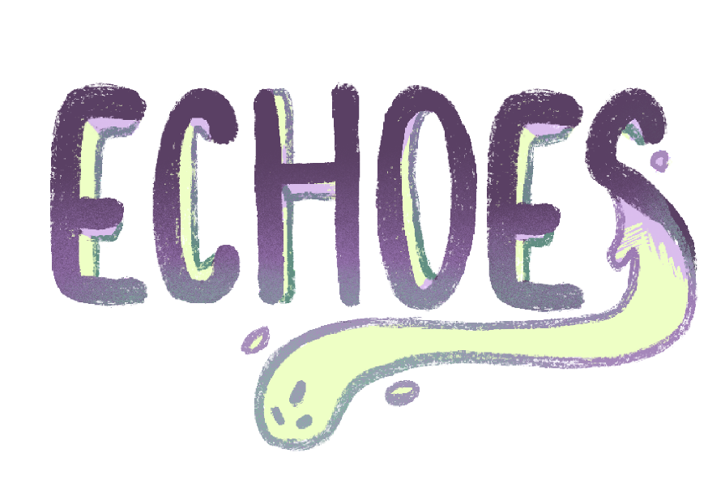
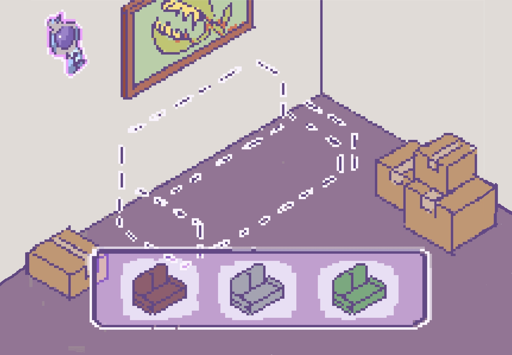
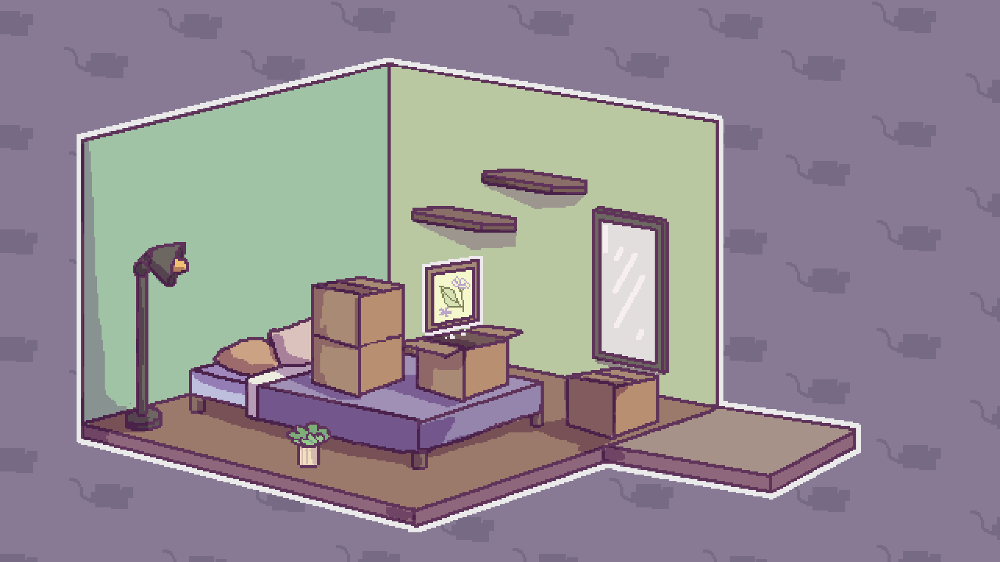

Con tu voto este proyecto podrá hacerse realidad y estará disponible GRATIS en noviembre.
Lanzamiento WebGL 2026
¿De qué se trata este juego?
Echoes es una cozy en la que heredas una casa abandonada algo extraña que debes restaurar desde cero. Sin embargo, tu trabajo de orden y limpieza se verá constantemente saboteado por pequeños contratiempos mágicos.
Pero bajo este caos, la casa oculta un pasado oscuro y fragmentado. A medida que avanzas, más evidente se vuelve que este desorden no nace en el presente, sino que es una manifestación directa del pasado.
Postales
Habitaciones y ambientes pixel art en desarrollo
![[Living cozy en reparación]](img/pintura screen.png)


Las 3 Fases de la Mudanza
En Echoes controlas el flujo de la casa de forma muy interactiva. Cada nivel cuenta con tres etapas sumamente dinámicas antes de considerarse superado:
-
1
Fase 1: Reparar la habitación Limpia las místicas telarañas, lija y arregla las grietas de la pared y pinta las habitaciones usando intuitivos y táctiles minijuegos.
-
2
Fase 2: Amueblar la habitación Elige las piezas principales de mobiliario para estructurar el espacio utilizando nuestra barra de personalización con 4 variables estéticas únicas.
-
3
Fase 3: Decorar y organizar la habitación Desempaca las nostálgicas cajas y ubica libremente cada pequeño objeto personal de los espíritus en estantes, mesas o cajones con arrastre point-and-drag.
Cyan, el fauno
Cyan, luego de perder su trabajo tras ser considerada "poco monstruo" por su apariencia, se ve obligada a mudarse a lo único que le quedó de su herencia familiar...-La Casa Abandonada de la Abuela-.
Equipada con su morral de herramientas, sus cascos para escuchar música ASMR de fondo y una paciencia de hierro, Cyan tendrá que tomar decisiones que afectarán directamente la convivencia del hogar.

Apoya este proyecto y vota YA
Con solo pulsar el botón de abajo registrarás tu apoyo y nos ayudarás a lanzar el juego de forma gratuita este noviembre.
Votar por EchoesOtros proyectos que puedes chusmear
Explora más joyas de nuestro catálogo indie